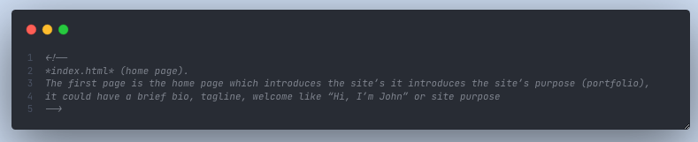
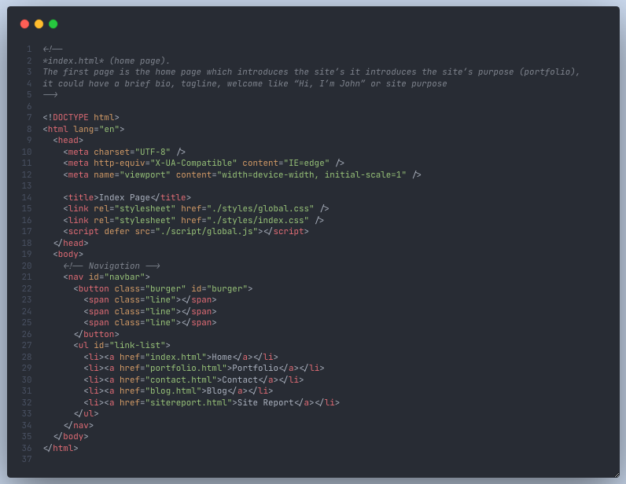
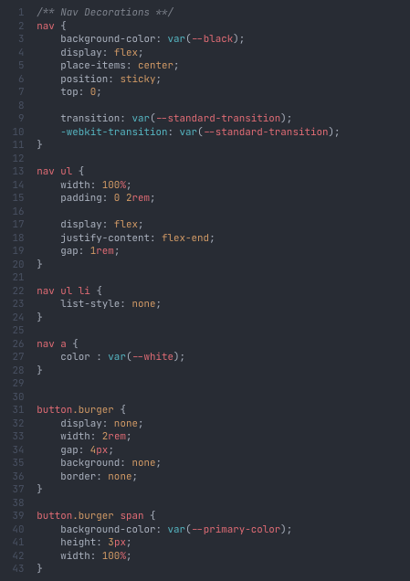
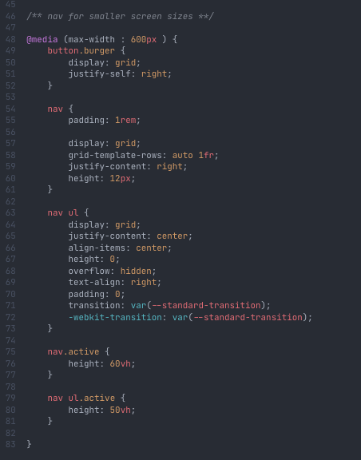
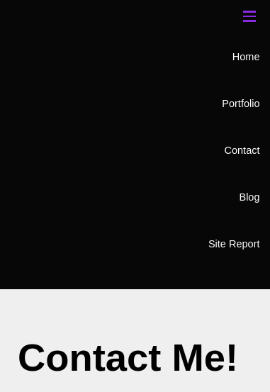

Site Report
Learning Experience
Web development has been one of the most exciting units I've tacked so far. As a painter, I love creating artistic masterpieces and to me web design is a form of digital art.
I loved the use of color and subtle animation, and learning about web
dev trends from the online community has been refreshing and
reassuring #stackoverflow.
I love that I was able to borrow design elements from my favorite
desktop applications and instantly create mirror designs from just
looking. Markup gives you limitless opportunities to create and the
learning journey is far from over.
Bottom-Line >> I love playing with css!!!
Achievements
- Animation
- Responsiveness
- Validation
- Github Usage
- Site Report
Challenges
- Github had a bit of a leaning curve, but I managed to work around it through rigorous research
- Responsive design was a bit of a challenging as I had to use multiple browser windows for navigation. I also had to correct last minute bugs.
- Browser compatibility needed some getting used to; debugging chrome and firefox.
Development Overview
My development cycle is split into various stages:
- Wire-Framing
- Templating
- Hydration
Wire-Framing
My initial commit contained empty html files and empty
folders because I had a feeling I knew what to do with those later on.
The html files each had comments about the instructions
for each page so that I can keep track of what the question demanded

Templating
Each page demands a consistent layout hence I had to create the same
nav layout an work out the styling before copying and
pasting it on each page.

First I solved the layout on wide screens then add reponsive design for smaller screens using the
@media query.
 
This helped form the burger menu

But at this point I only had pages with single h1 tags to
differentiate them, but it gave way to the next step >> Hydration
Hydration
This was the part where I had to fill each file with its respective
markup, carefully adding the relevant tags representing each article.
Every page hydration called for its own git commit.
Version Control
Initially I was working on the main branch master and
making direct commits, but I learnt that this is a bad practice.
My first secondary branch was called midguard which was
inspired by the Norse creation myth to symbolise my hydration. I made
multiple pull requests to merge with the main branch. I'm the only one
working on this projects so there weren't any conflicts.
My next branch was validation which I used to make
commits around the content validation of both my markup and
stylesheets.
Debugging
I used firefox and google-chrome to test browser
compatibility to ensure I never missed a single
-webkit prefix in my stylesheet.
I also used the reponsive DevTools control to test responsiveness for smaller screen sizes.
Validation
I needed to do some cleaning up of meta tags for the file encoding and
remove spaces from file names to pass the
validator.w3.org
check.
index.html
portfolio.html
contact.html
blog.html
sitereport.html
global.css
portfolio.css
contact.css
blog.css
index.css
report.css